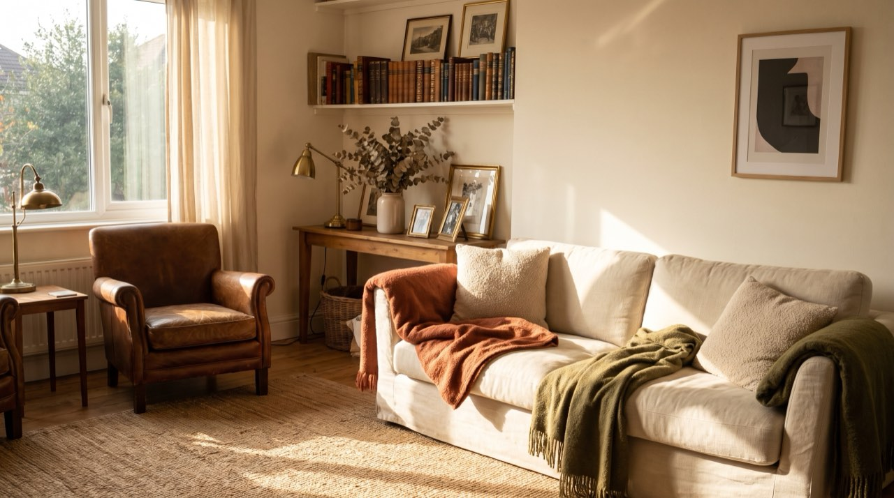
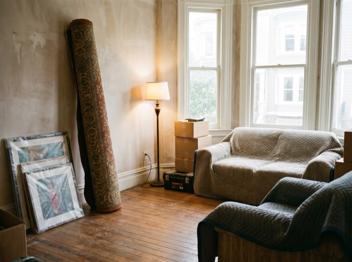
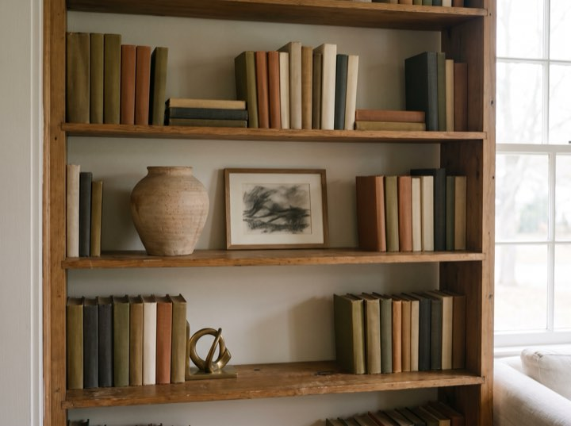
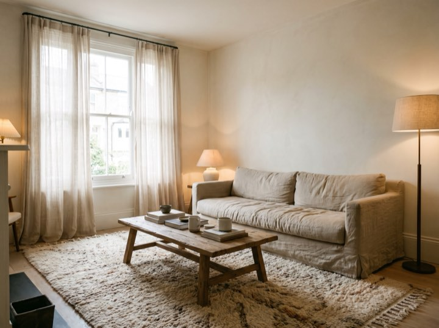

Whole-home design
Concept through installation, including everything that gets specified, ordered, chased, received and placed. Usually four to nine months.
Full-service residential interiors
Full-service interior design for whole homes and substantial renovations, generally from around $60,000 including furnishings. We procure, chase, receive, inspect and install. Half a service in this business is worse than none.

Services
Full service, meaning we handle procurement, deliveries, trades and installation. Half a service is worse than none in this business.
Concept through installation, including everything that gets specified, ordered, chased, received and placed. Usually four to nine months.
Working alongside your architect and builder on finishes, joinery, lighting and the decisions that get made too late otherwise.
Kitchens, principal bedrooms and living rooms as standalone projects. From about $25,000 including furnishings.
We buy at trade and pass the discount to you, charging a transparent design fee instead of marking up your sofa.
Results
From our clients
Being able to filter by style saved me three wasted consultations.
Yolanda P.Whole homeNo mark-up on furnishings and they showed us the invoices.
Aaron K.RenovationInstall day was a single day. Everything arrived, everything fitted.
Nour E.Principal suiteWorked with our architect rather than around them.
The BeltransNew build interiorsProcess
The bit people find hardest is the middle, where nothing seems to be happening and everything is being ordered.
We visit, walk the house and talk about how you actually live in it. A fixed fee, credited against the project if you proceed.
Direction, palette and a realistic furnishing budget room by room. This is where expectations and money get reconciled.
Everything specified, ordered and tracked by us. Long lead times are the reality; knowing about them early is the service.
Usually a single day. Everything arrives at our warehouse first, gets inspected, and goes in at once rather than in dribs.
Installed by us
We unpack it, place it, hang it and style it. The room is finished when we leave, not when the courier does.





The earliest useful conversation is before the builder starts. Lighting, joinery and layout decisions get very expensive once walls are closed.
Projects generally from $60,000 including furnishings. Consultation fee credited against the project.